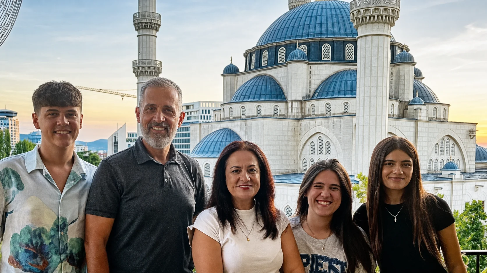
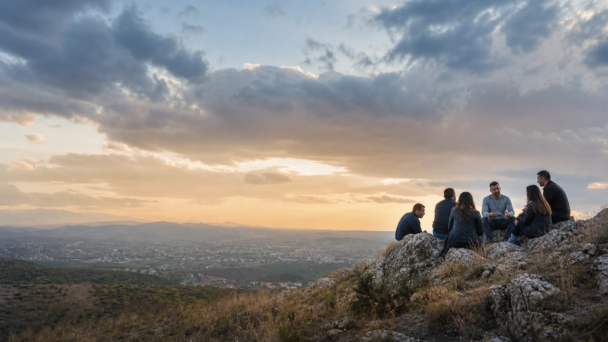

Pastoring Locally
Serving and shepherding through a local church in Tirana, Albania.
Cru · Global Church Movements
Kejdis & Rudina Bakalli serve with Cru / Global Church Movements, equipping churches and leaders to make disciples, plant healthy churches, and reach people where they already are: online and in everyday life.
Serving from Tirana, Albania with a global focus on church multiplication and digital strategies.

Our mission
For more than 25 years, Kejdis has served with Cru, helping equip leaders and multiply churches across Albania, Eastern Europe, Russia, and beyond. Today, Kejdis and Rudina continue serving from Tirana while contributing to Global Church Movements’ vision of multiplying disciples, leaders, and churches in every community—including digital communities.
How we serve
Local faithfulness and global strategy belong together. Each part of our work helps disciples, leaders, and churches multiply.
Serving and shepherding through a local church in Tirana, Albania.
Helping leaders and movements plant healthy, multiplying churches.
Training, coaching, and encouraging Christian leaders for long-term fruitfulness.
Developing strategies that help churches make disciples in online spaces and digital networks.
Current focus
Our current work helps churches engage the digital world as a place where real people gather, real relationships form, and disciples can be made. We want to see leaders equipped and churches multiplied wherever people are.
Our story
Not a list of titles, but a thread of calling: learn, serve, equip, multiply, and keep going where God opens doors.
Kejdis began a lifelong journey of helping people know Christ and multiply their faith.
After studying Biology and Chemistry, Kejdis taught both subjects for two years.
A Master’s in Organizational Leadership strengthened a calling to develop people and movements.
Led church planting efforts for Cru Global Church Movements across the region.
Co-founding leader of a national church planting movement with 100 churches and counting.
Pastoring in Tirana and serving GCM globally as Global Leader for Digital Strategies.

Global Church Movements vision
Global Church Movements helps establish vital, multiplying, and sustainable churches and faith communities in rural villages, suburban neighborhoods, urban high-rises, and digital communities—among every tribe, tongue, people, and nation, toward the picture of Revelation 7:9.
Ways to partner
Every prayer, gift, and conversation helps equip another leader and move the gospel toward another community.
Pray for churches, leaders, and digital mission opportunities around the world.
Join prayer updates →Partner financially through Cru to help equip more leaders and multiply more churches.
Give through CruInvite Kejdis to speak, learn more about the ministry, or explore digital mission training.
Contact us →Contact
Whether you want to learn more, invite Kejdis to speak, or explore digital mission training, we would be glad to hear from you.